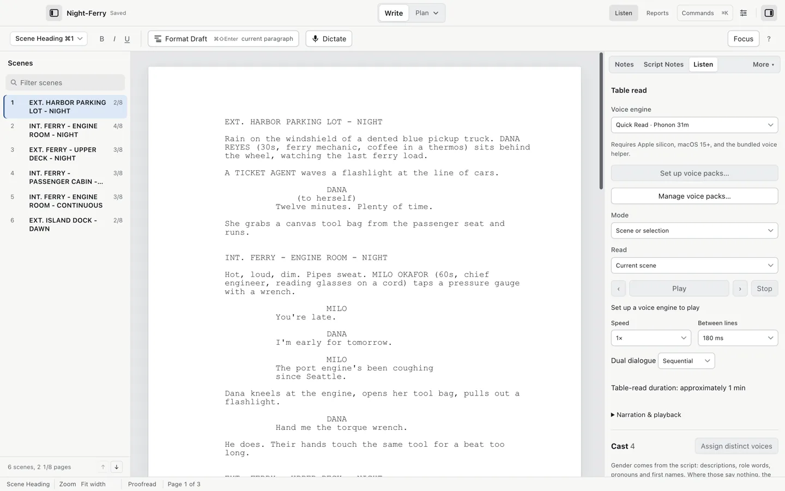
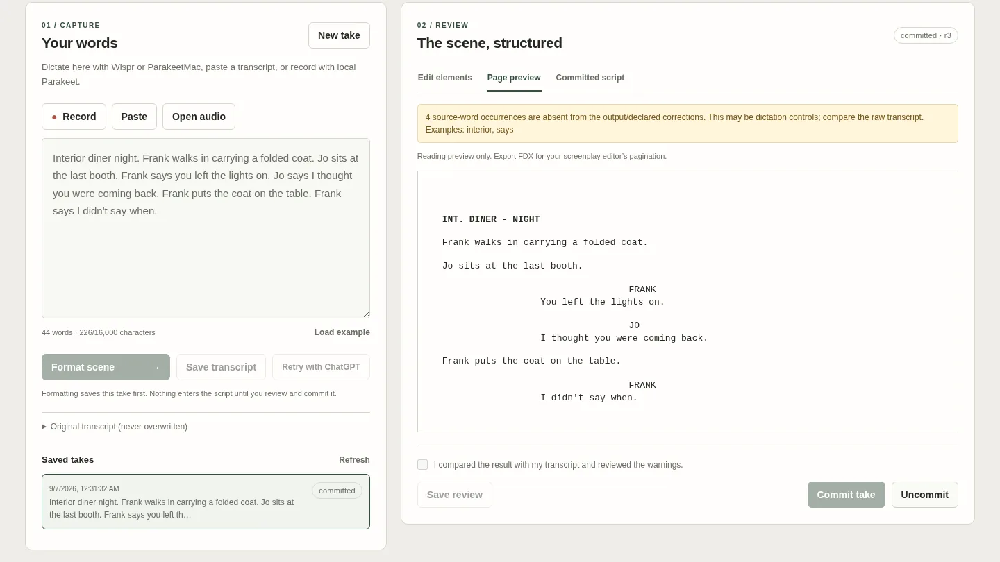
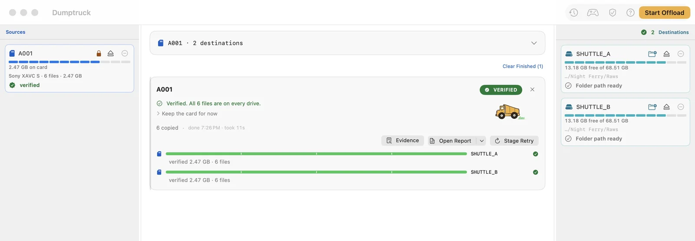
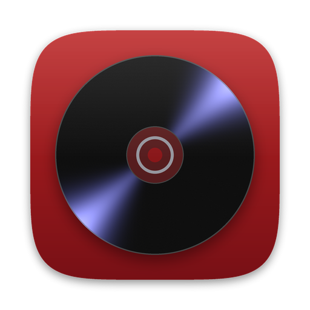
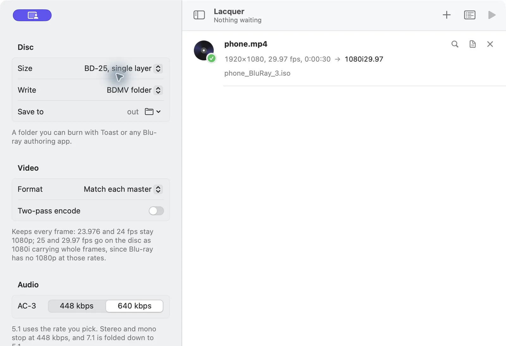

Write
Get the script on the page
A screenwriting app that opens and saves Final Draft files.
Cold Open types like Final Draft: Tab and Return move through scene headings, action, characters and dialogue, and pages break where Final Draft breaks them. It opens and saves .fdx and keeps the Final Draft data it doesn't edit.
- Templates for features, one-hour, half-hour, multi-camera and stage plays
- Co-writers type in the same script at once
- Reads and writes Fountain too
Version 0.1.0 beta 12. macOS 14 Sonoma or later, Apple Silicon. GPL-3.0.

Say a scene out loud and get Final Draft paragraphs.
Click an empty paragraph in Final Draft, press Command-Option-D and talk through the scene. Press it again and the scene lands at your cursor with the heading, action, character names and dialogue each in its own element.
- Speech recognition and formatting both run on your Mac
- Understands “scratch that” and corrections mid-sentence
- Exports Fountain, FDX or plain text for other writing apps
Version 0.3.1 beta. macOS 14 Sonoma or later, Apple Silicon. MIT.

Plan
Budget it, break it down, schedule it

A production office on your Mac.
Backlot keeps the budget, script breakdown, stripboard, day out of days, call sheets and daily reports in one project file on your own disk, and prints them the way a production office expects to see them.
- Budgets with fringes, globals, purchase orders and actuals
- Breakdowns from a Final Draft or Fountain script
- Call sheets sent as PDFs, with who confirmed
Version 0.7.0 beta 8. macOS 13 Ventura or later, Apple Silicon. GPL-3.0.

Shoot
Back up every card before it is cleared
Camera card offload that checks every copy.
Dumptruck copies a camera card to your backup drives, reads each copy back off the drive to check it against the card, and writes a report with ASC MHL manifests. A card shows SAFE TO CLEAR only when two separate drives hold verified copies.
- A card that kept shooting: only the new clips copy
- HTML and PDF reports with clip thumbnails
- Reads R3D, BRAW and ARRIRAW metadata
Version 0.5.22 beta. macOS 14 Sonoma or later, Apple Silicon. Apache-2.0.

Deliver
Put the finished film on a disc

Lacquer
Blu-ray discs from your finished master.
Lacquer takes the ProRes, DNxHR, H.264 or HEVC master you exported and makes a Blu-ray from it, with an on-screen menu if you want one. It writes a BDMV folder, a disc image for a duplicator, or an M2TS for Toast.
- Menus built from a frame of your film or your poster
- Sets the bitrate to fill a BD-25 or BD-50
- Subtitles from an .srt, chapters where you list them
Version 0.2.1 beta. macOS 13 Ventura or later, Apple Silicon. GPL-3.0.
